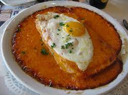

The king of the north: The Welsh:

The welsh is a typal dish from the northern france it's made of beer and cheese what else could you ask for?
Oh I know it's served with fries (north of france is very close from belgium that's why we are also fond of fries
Ingreadients:
- 800g of cheddar
- 25cl of brown beer
- salt and pepper
- grain mustard
- 1 farmhosue bread
- 4 slices of buchter ham
- 4 eggs
Meal prep:
- cover the mustard and one freshly cut slice of bread
- add a slice of ham on top of it, put the whole in a gratin dish
- in a pan, cut the cheddar in small pieces to melt it easily
- slowly heat the cheddar until it melt and add the beer
- spice it with a bit of salt and pepper
- once you have a nice creamy texture, put the whole cheese n beer on top of the bread n ham
- add an egg on top of that
- send it to the hover took crips the chees and cook the egg
To finish:
Serve the meal with a whoile bunch of fries and dip into the cheese